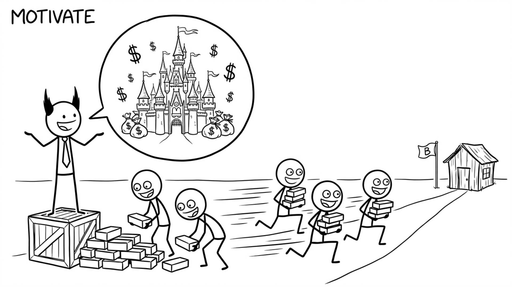

<section id="motivate" data-transition="fade" style="display:flex; align-items:center; justify-content:center; padding:0; background:#fcfcfa">

<p style="position:absolute;left:0;bottom:10px;width:1920px;margin:0;text-align:center;font-family:'Patrick Hand', 'Trebuchet MS', sans-serif;font-size:22px;color:#8a8f98">Copyright Dobromir Montauk 2026</p>
<aside><b>Motivate.</b> People work harder on things they understand and care about.<br>- Bring an engineer to a customer site to watch the product being used.<br>- Share the real number: the revenue, the customer count, the deal this unlocks.<br>- Connect the project to their career: this is the scope that gets them promoted.<br>- Celebrate the ship publicly and name who did it.<br>But don't oversell. If the "company-changing" launch turns out to be a pilot at one site, the next pitch lands flat.<br>Overtime lives here too. A short push before a hard deadline can win the week, but it borrows from capacity: burnout, attrition and bugs next sprint.</aside>
</section>
